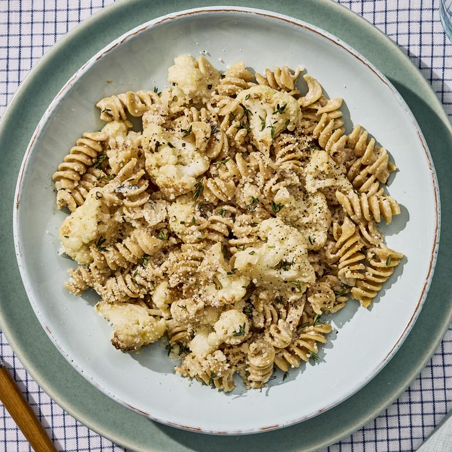

Creamy Caramelized Cauliflower Pasta
Home

Description
This creamy cauliflower pasta is the ultimate comfort food—rich, velvety and flavorful. With simple ingredients and quick prep, it’s a satisfying dish that feels fancy without the fuss and is the ideal meal for a cozy weeknight dinner. Add a squeeze of lemon or a pinch of chile flakes to elevate this easy, comforting classic even more!
ingredients
- 8 ounces whole-wheat rotini (about 2¾ cups)
- 3 tablespoons unsalted butter, divided
- 1 small head cauliflower (1 pound), cut into 1-inch florets (4 cups)
- ¾ teaspoon salt
- ¼ cup thinly sliced garlic (from 8 large garlic cloves)
- 2 tablespoons water
- 2 teaspoons fresh thyme leaves, plus more for garnish
- ¾ teaspoon ground pepper, plus more for garnish
- 2 tablespoons sherry vinegar
- ½ cup sour cream
- ¼ cup heavy cream
- ½ cup grated Parmesan cheese, divided
Steps
- Bring a large saucepan of water to a boil. Cook 8 ounces rotini according to package directions for al dente. Reserve ½ cup cooking water; drain the pasta.
- Meanwhile, melt 2 tablespoons butter in a large nonstick skillet over medium heat. Add cauliflower florets and ¾ teaspoon salt in an even layer. Cook, undisturbed, until browned on the bottom, 5 to 7 minutes. Stir; cook, stirring occasionally, until golden brown all over, 5 to 8 minutes. Add ¼ cup garlic; cook, stirring occasionally, until fragrant, about 1 minute. Add 2 tablespoons water, 2 teaspoons thyme, ¾ teaspoon pepper and the remaining 1 tablespoon butter; cook, stirring occasionally, until the cauliflower is well coated, about 2 minutes. Stir in 2 tablespoons vinegar; cook, stirring often, until the liquid has mostly evaporated, about 30 seconds. Remove from heat.
- When the pasta is done, return the cauliflower mixture to medium heat; stir in the cooked pasta, the reserved ½ cup cooking water, ½ cup sour cream, ¼ cup heavy cream and ¼ cup Parmesan. Cook, stirring constantly, until the sauce becomes creamy and coats the pasta, 1 to 2 minutes. Divide among 4 bowls. Top with the remaining ¼ cup Parmesan. Garnish with additional thyme leaves and pepper, if desired.